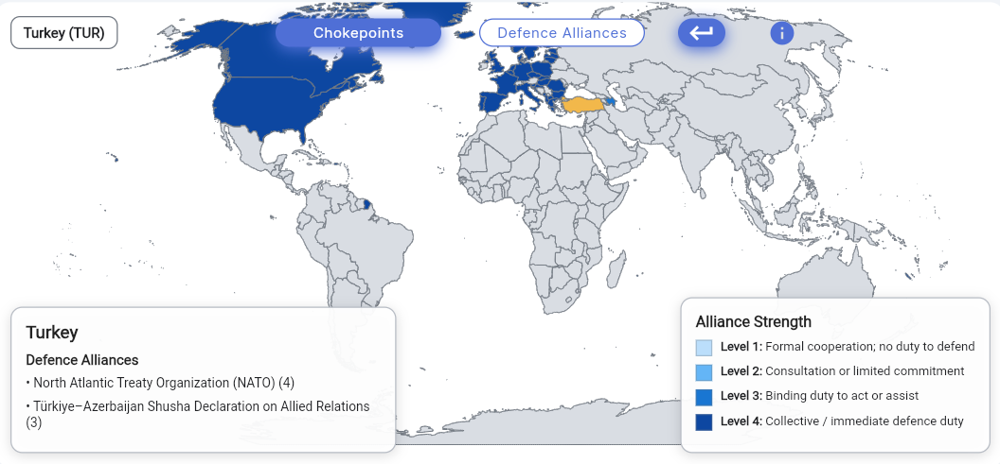
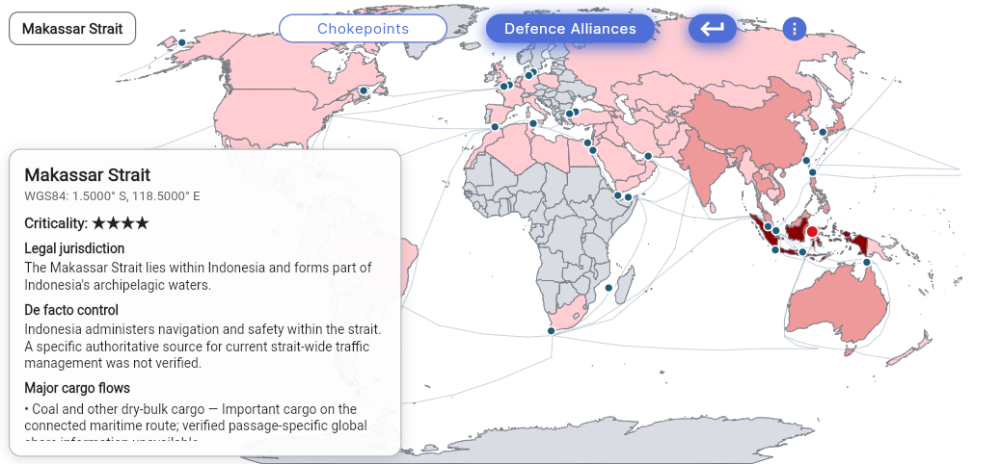

Operational Control Map
Geography, access and security commitments in one operational view
The GRIP Operational Control Map brings together strategic maritime chokepoints and defence-alliance relationships. It shows how geography, legal jurisdiction, operational control and formal security commitments shape the environment in which states act.
Defence Alliances
Defence alliances at a glance
Explore formal defence commitments and security partnerships between states. GRIP visualises alliance strength through four commitment levels, distinguishing formal cooperation, consultation arrangements, binding duties to assist and collective defence obligations.
- Country-specific alliance relationships
- Four clearly defined commitment levels
- Concise summaries of relevant treaties and arrangements

Maritime Chokepoints
Strategic maritime chokepoints
Analyse critical sea routes through geographic position, legal jurisdiction, de facto control, major cargo flows and strategic importance. Each chokepoint card combines location data with a concise operational assessment.
- WGS84 coordinates and criticality rating
- Legal jurisdiction and de facto control
- Major cargo flows and route-specific significance

Interpretation
What the map is designed to show
Formal structure
Treaties, partnerships and legal commitments are shown separately from political assumptions.
Operational reality
Legal jurisdiction is distinguished from actual administrative and operational control.
Strategic relevance
Geography is connected to cargo flows, route dependence and the consequences of disruption.
The map is an analytical reference layer. It does not claim that formal commitments automatically determine political decisions, or that legal jurisdiction always corresponds to effective control.
Continue to Terms